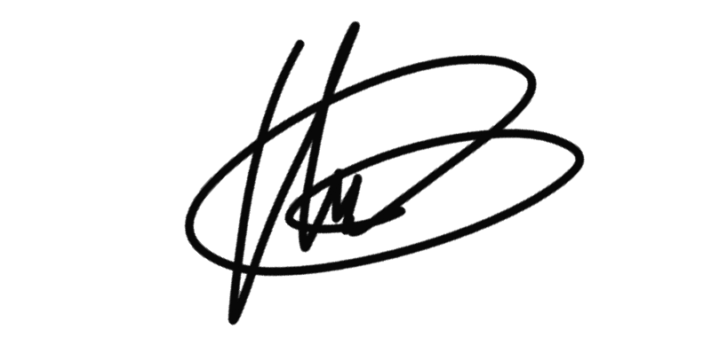

Hola, mi nombre es Ángel y soy un apasionado de las nuevas tecnologías. Desde pequeño los ordenadores siempre han tenido un sitio en mi vida y así continuó cuando empecé a trabajar.
En esta página podrás conocer toda mi experiencia, mi formación y los proyectos en los que he estado trabajando. Si lo consideras de rigor tienes un apartado para poder ponerte en contacto conmigo en el menú superior o al final de la página.
2019 - Actualidad
Consultorí:a informática en la que pertenecía al departamento de Sistemas. En este puesto realicé tareas de montaje y gestión de servidores, monitorización de recursos, trabajos de DevOps. Además estuve integrado en dos proyectos para grandes clientes como son el Grupo PSA y la Xunta de Galicia.
2013 - 2019
Tecnocontrol es una empresa que prestaba servicios de telecomunicaciones para la compañía R Cable. Realicé tareas de técnico de campo, técnico nivel 2 y mantenimiento de troncales. En el año 2018 el contrato con el proveedor de servicio fue subrogado a la empresa Elecnor y con el cambio de compañía pase a ser Supervisor de campo.
2011 - 2012
Compañía que prestaba servicios de telecomunicaciones para la empresa Vodafone. Realicé tareas de campo en clientes particulares y empresas.
2010 - 2011
En este periodo realicé las tareas de docente en los cursos de informática y nuevas tecnologías que el instituto impartía en su sede en Bamio (Vilagarcía de Arousa).
2008 - 2010
Empresa en la que realicé funciones de atención al cliente de Tele2 y Vodafone, técnico de cliente GGCC y técnico en el departamento de especiales (Nivel 2.)
2006 - 2007
Compañía en la que me dedicaba al montaje, configuración y mantenimiento de los servidores virtuales y dedicados de empresas y videojuegos.
2004 - 2012
Empresa de creación propia que se encargaba de montaje y reparación de equipos informáticos; mantenimiento de empresas, consultoría etc.
2003
Montaje y reparación de equipos informáticos en taller y en domicilio. Soporte a empresas. Prácticas del ciclo formativo.
2003
Vilagarcía de Arousa
2020
Formación on-line.
Aquí podrás conocer los proyectos a los que suelo dedicar mi tiempo libre.
+34 698 187 823
kasiomac@gmail.com